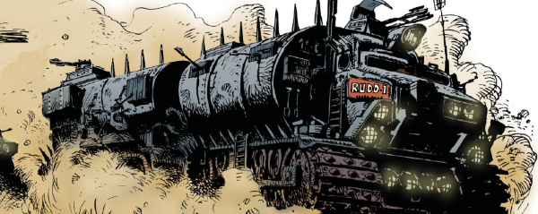

Inspired by stories of wagon trains making the dangerous trek from east to west across the US, this has Mega-City One citizens attempting the same thing across The Cursed Earth in radwagons. It plays like a disaster movie, with us being introduced to folk who are then killed off by various terrible events (like dinosaur attacks and acid rain).
Although this tale, heavy on the melodrama, proved risible for a portion of the readership, the concept of Helltreks and radwagons became a staple motif of Dreddverse lore. Often seen in the background (in, say, Alabammy Blimps, and as the denouement of the modern classic The Heart Is a Lonely Klegg Hunter), or as the kernel of a wider investigation (as in The Raggedy Man and Ratfink), the concept was also used as the core structure for the Missionary Man fable The Promised Land.
Art by Jose Ortiz
| Story Title | Parts | Pages | w indicates a wraparound coverCovers | Year(s) | Issues | Writer | Artist | Colourist | Letterer |
|---|---|---|---|---|---|---|---|---|---|
| The Helltrekkers | 29 | 120 | 2 | 1984-1985 | Reprints: M218‑M223387-415 | Alan Grant John Wagnervarious | Jose Ortiz: 1 Horacio Lalia: 2‑29 various | <--7pp, [b&w] | Steve Potter: 1 Tom Frame: 2‑3 Tony Jacob: 4‑29 various |
| >> Features << | |||||||||
A 2000AD Futurescan.The Helltrekkers | 2 | 2 | 0 | 1984 | 387-388 | Alan Grant John Wagnervarious | Jose Ortiz Horacio Laliavarious | <-- | n/a |
| year | episodes | pages |
| 1977 | 0 | 0 |
| 1978 | 0 | 0 |
| 1979 | 0 | 0 |
| 1980 | 0 | 0 |
| 1981 | 0 | 0 |
| 1982 | 0 | 0 |
| 1983 | 0 | 0 |
| 1984 | 12 | 50 |
| 1985 | 17 | 70 |
| 1986 | 0 | 0 |
| 1987 | 0 | 0 |
| 1988 | 0 | 0 |
| 1989 | 0 | 0 |
| 1990 | 0 | 0 |
| 1991 | 0 | 0 |
| 1992 | 0 | 0 |
| 1993 | 0 | 0 |
| 1994 | 0 | 0 |
| 1995 | 0 | 0 |
| 1996 | 0 | 0 |
| 1997 | 0 | 0 |
Comic strip data (excludes other content):